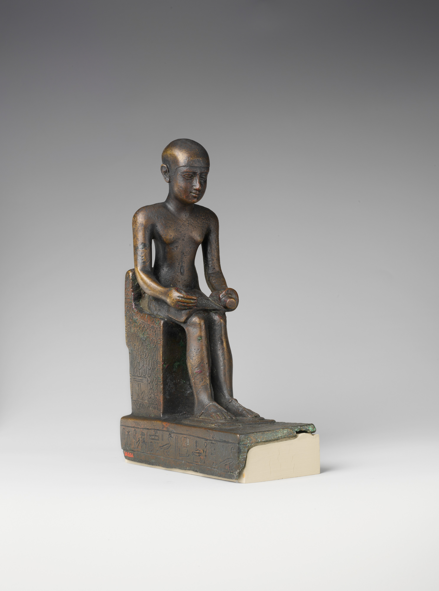

Antiguo Egipto
Imhotep

Imhotep (en griego Ἰμούθης; pronunciación en español: Im-jo-tep) (aprox. 2690 - 2610 a. C.), también conocido como Imutes, fue un erudito egipcio polímata: sabio, inventor, médico, matemático, astrónomo y el primer ingeniero y arquitecto conocido de la historia.
Ocupó el cargo de sumo sacerdote de Heliópolis y fue chati (visir) del faraón Necherjet Dyeser (Zoser), durante la dinastía III. Fue el diseñador de la Pirámide escalonada de Saqqara, considerada la primera gran construcción monumental en piedra de la humanidad.
El significado del nombre Imhotep es «el que viene en paz». Está reconocido como el primer científico cuyo nombre ha perdurado a lo largo del tiempo. Su versatilidad en múltiples campos revela un profundo conocimiento operativo en aritmética y geometría, indispensables para la medicina, arquitectura y astronomía.
Los títulos honoríficos que se le atribuyen incluyen:
-
Chati del Rey del Bajo Egipto
Jefe de los Sellos Reales
Sumo sacerdote de Heliópolis
Constructor, escultor y hacedor de vasijas de piedr
Arquitecto principal del faraón
Tras su muerte, fue objeto de culto y con el tiempo fue deificado, siendo venerado como el dios de la medicina y la sabiduría en épocas posteriores, especialmente durante el periodo grecorromano, en el que fue identificado con Asclepio por los griegos.
Imhotep fue el autor del complejo funerario de la Pirámide Escalonada de Saqqara, cerca de Menfis, construido durante el reinado del faraón Dyeser (Zoser) hacia el 2650 a. C. Esta obra monumental representó una revolución arquitectónica, ya que fue la primera vez en la historia que se utilizó piedra caliza a gran escala, en lugar de los tradicionales ladrillos de barro sin cocer (adobe).
Uno de los principales desafíos técnicos fue el peso del nuevo material: Imhotep lo resolvió utilizando bloques más pequeños y manejables. Las columnas dentro del complejo eran principalmente decorativas o adosadas a los muros, ya que aún no se dominaba la técnica estructural para columnas autoportantes. Además, las herramientas de la época estaban hechas de cobre, un metal blando para cortar piedra, lo que hace aún más notable la hazaña.
Imhotep organizó y supervisó el trabajo de cientos de obreros y diseñó la primera ciudad funeraria completa. Esta ciudad estaba rodeada por una muralla de aproximadamente 1.500 metros de perímetro, con múltiples edificaciones simbólicas. En el centro, erigió una pirámide de seis gradas y 60 metros de altura. Debajo de ella excavó una tumba para Zoser y una red de galerías subterráneas destinadas al almacenamiento de miles de vasijas funerarias, muchas de ellas grabadas con los nombres de faraones anteriores.
Ingeniero
Las habilidades de Imhotep no se limitaron a la arquitectura: también fue un pionero de la ingeniería. Sus innovaciones en técnicas de construcción y planificación estructural evidencian un profundo conocimiento de la integridad de materiales y principios físicos. Su legado en este campo incluye:
- Sistemas hidráulicos: Se cree que poseía conocimientos avanzados de hidráulica y diseño de sistemas de riego, esenciales para el sustento agrícola del Valle del Nilo.
- Materiales de construcción: Experimentó con diferentes tipos de piedra como caliza y arenisca, estableciendo la base para futuras obras monumentales en Egipto.